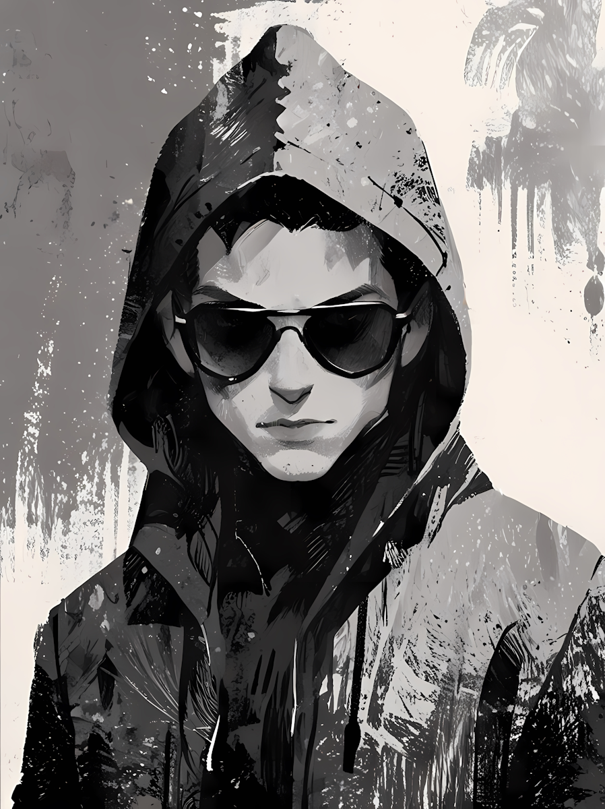

About ME
Hello! I'm a passionate web developer with a strong focus on building responsive, user-friendly
interfaces. I enjoy turning complex problems into simple, elegant solutions using clean and efficient
code. My journey in tech started with curiosity and quickly evolved into a full-blown passion for
front-end development, design systems, and performance optimization.
I’m always exploring new technologies and constantly seeking ways to improve my workflow and deliver
better experiences. Whether it's building from scratch or collaborating on existing projects, I thrive
in creative, team-oriented environments that challenge me to grow.